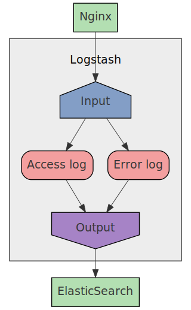

- Published
- 2017-10-01
In this article we will setup Nginx to send it's access and error logs
using the syslog standard to Logstash, that stores the logs in ElasticSearch.
The reason why we would want to do this is because:
- It's easy to setup
- Nginx has builtin support for this
- You don't need to configure and run a separate program for log collection
We will do this in a step by step manner using Docker and docker-compose
locally. And don't worry, you don't need to copy all the files manually,
there's a gzipped tar file you can download here (signature) that contains the fully working
project.
Project structure
We will setup 3 services using docker-compose:
NginxLogstashElasticsearch
We will base our Docker containers on the official Docker images for each project. We will use the alpine based images when available to save space.
Let's start by creating an empty project directory, and then create our docker-compose.yaml file in the root of the project:
docker-compose.yaml
version: '3' services: nginx: build: ./nginx depends_on: - logstash ports: - 8080:8080 logstash: build: ./logstash depends_on: - elasticsearch elasticsearch: image: elasticsearch:5.5-alpine environment: - cluster.name=docker-cluster - bootstrap.memory_lock=true - xpack.security.enabled=false - "ES_JAVA_OPTS=-Xms2g -Xmx2g" ulimits: memlock: soft: -1 hard: -1 ports: - 9200:9200
Since we will not change the image for ElasticSearch we'll just use the
official image as is.
Setting up Nginx
Let's setup nginx by first creating the ./nginx directory and then start to
work on the nginx config file.
We'll use a very simple setup where we just serve static files from the
directory /nginx/data and then send the access and error logs to Logstash. To
be able to find the Logstash container we use Dockers builtin resolver, so we
can use the service name we used in docker-compose.yaml.
nginx/conf/nginx.conf
# Needed to run nginx in Docker daemon off; pid /nginx/nginx.pid; events { worker_connections 1024; } http { # Use Dockers builtin resolver to find the other Docker based services resolver 127.0.0.11 ipv6=off; include /etc/nginx/mime.types; # Custom log format that also includes the host that processed the request log_format logstash '$remote_addr - $remote_user [$time_local] "$host" ' '"$request" $status $body_bytes_sent ' '"$http_referer" "$http_user_agent"'; # Send logs to Logstash access_log syslog:server=logstash:5140,tag=nginx_access logstash; error_log syslog:server=logstash:5140,tag=nginx_error notice; # Serve all static content inside the /nginx/data directory server { listen 8080; root /nginx/data; location / { } } }
We're using a custom log format to include the host so that we can have many
nginx instances running and logging to the same Logstash instance.
Also we are tagging the logs so that Logstash will be able to parse the logs
correctly depending on whether it's an access or error log being sent.
Then we'll just create some static HTML content that will be put in the
nginx container:
nginx/data/index.html
<!DOCTYPE html>
<html lang="en">
<head>
<meta charset="utf-8">
<meta name="viewport" content="width=device-width">
<title>Nginx test</title>
</head>
<body>
Hello, we're just testing nginx logging.
</body>
</html>
Now we are ready to create our Dockerfile for the nginx container:
nginx/Dockerfile
FROM nginx:stable-alpine WORKDIR /nginx RUN chown nginx:nginx /nginx USER nginx COPY ./data /nginx/data COPY ./conf /nginx/conf CMD ["nginx", "-c", "/nginx/conf/nginx.conf"]
After doing this, our project should have the following structure:
$ tree
.
├── docker-compose.yaml
└── nginx
├── conf
│ └── nginx.conf
├── data
│ └── index.html
├── Dockerfile
└── nginx.conf
3 directories, 5 files
Setting up Logstash
Next we'll setup Logstash by first creating the ./logstash directory and
then start to work on the Logstash configuration file.
We'll setup Logstash to use:
- 1 input for
syslog - 2 filters to process access and error logs
- 1 output to store the processed logs in
ElasticSearch

We will use the Logstash Grok filter plugin to process the incoming nginx
logs. Grok is a plugin where you write patterns that extract values from
raw data. These patterns are written in a matching language where you define
a simplified regular expression and give it a name.
For example, let's say we want to validate and extract the HTTP method from a string, then we'd write the following grok pattern:
METHOD (OPTIONS|GET|HEAD|POST|PUT|DELETE|TRACE|CONNECT)
You can then combine these named regular expressions to parse more complex strings. Suppose we want to parse the first line of a HTTP request, that could look like this:
GET /db HTTP/1.1POST /user/login HTTP/1.1
Then we'd define a grok pattern that we write as the text file
/etc/logstash/patterns/request_start with the following content:
METHOD (OPTIONS|GET|HEAD|POST|PUT|DELETE|TRACE|CONNECT)
REQUEST_START %{METHOD:method} %{DATA:path} HTTP/%{DATA:http_version}
To use this pattern we simply add a grok configuration to the filter
part of the Logstash config file:
filter { grok { patterns_dir => "/etc/logstash/patterns" match => { "message" => "%{REQUEST_START}" } } }
We have now told Logstash to match the raw message against our pattern and
extract 3 parts of the message. Processing our examples above we'd get the
following results:
GET /db HTTP/1.1
{
method: "GET",
path: "/db",
http_version: "1.1"
}
POST /user/login HTTP/1.1
{
method: "POST",
path: "/user/login",
http_version: "1.1"
}
Here's how our grok patterns look for nginx access and error logs:
logstash/conf/patterns/nginx_access
METHOD (OPTIONS|GET|HEAD|POST|PUT|DELETE|TRACE|CONNECT)
NGINX_ACCESS %{IPORHOST:visitor_ip} - %{USERNAME:remote_user} \[%{HTTPDATE:time_local}\] "%{DATA:server_name}" "%{METHOD:method} %{URIPATHPARAM:path} HTTP/%{NUMBER:http_version}" %{INT:status} %{INT:body_bytes_sent} "%{URI:referer}" %{QS:user_agent}
logstash/conf/patterns/nginx_error
ERRORDATE %{YEAR}/%{MONTHNUM}/%{MONTHDAY} %{TIME}
NGINX_ERROR %{ERRORDATE:time_local} \[%{LOGLEVEL:level}\] %{INT:process_id}#%{INT:thread_id}: \*(%{INT:connection_id})? %{GREEDYDATA:description}
And here's how we configure Logstash to setup syslog input, our grok
patterns and ElasticSearch output:
logstash/conf/logstash.conf
input { syslog { host => "logstash" port => 5140 } } filter { if [program] == "nginx_access" { grok { patterns_dir => "/etc/logstash/patterns" match => { "message" => "%{NGINX_ACCESS}" } remove_tag => ["nginx_access", "_grokparsefailure"] add_field => { "type" => "nginx_access" } remove_field => ["program"] } date { match => ["time_local", "dd/MMM/YYYY:HH:mm:ss Z"] target => "@timestamp" remove_field => "time_local" } useragent { source => "user_agent" target => "useragent" remove_field => "user_agent" } } if [program] == "nginx_error" { grok { patterns_dir => "/etc/logstash/patterns" match => { "message" => "%{NGINX_ERROR}" } remove_tag => ["nginx_error", "_grokparsefailure"] add_field => { "type" => "nginx_error" } remove_field => ["program"] } date { match => ["time_local", "YYYY/MM/dd HH:mm:ss"] target => "@timestamp" remove_field => "time_local" } } } output { elasticsearch { hosts => ["http://elasticsearch:9200"] manage_template => true template_overwrite => true template => "/etc/logstash/es_template.json" index => "logstash-%{+YYYY.MM.dd}" } }
The parameter program that we base our if-cases on is the tag value that we
configured nginx to add to the different types of logs:
# Send logs to Logstash access_log syslog:server=logstash:5140,tag=nginx_access logstash; error_log syslog:server=logstash:5140,tag=nginx_error notice;
The only thing left before we create the Dockerfile is to create the
ElasticSearch template to use. This template tells ElasticSearch what fields
our different types of log items will have. If you look closely at this
template, you'll notice that all the defined fields exists in the grok filter
definition.
logstash/conf/es_template.json
{
"version" : 50001,
"template" : "logstash-*",
"settings" : {
"index" : {
"refresh_interval" : "5s"
}
},
"mappings" : {
"nginx_access" : {
"_all" : {
"enabled" : false,
"norms" : false
},
"properties" : {
"@timestamp" : {
"type" : "date"
},
"body_bytes_sent": {
"type" : "integer"
},
"message" : {
"type" : "text"
},
"host" : {
"type" : "keyword"
},
"server_name" : {
"type" : "keyword"
},
"referer" : {
"type" : "keyword"
},
"remote_user" : {
"type" : "keyword"
},
"method" : {
"type" : "keyword"
},
"path" : {
"type" : "keyword"
},
"http_version" : {
"type" : "keyword"
},
"status" : {
"type" : "short"
},
"tags" : {
"type" : "keyword"
},
"useragent" : {
"dynamic" : true,
"properties" : {
"device" : {
"type" : "keyword"
},
"major" : {
"type" : "short"
},
"minor" : {
"type" : "short"
},
"os" : {
"type" : "keyword"
},
"os_name" : {
"type" : "keyword"
},
"patch" : {
"type" : "short"
}
}
},
"visitor_ip" : {
"type": "ip"
}
}
},
"nginx_error" : {
"_all" : {
"enabled" : false,
"norms" : false
},
"properties" : {
"@timestamp" : {
"type" : "date"
},
"level" : {
"type" : "keyword"
},
"process_id" : {
"type" : "integer"
},
"thread_id" : {
"type" : "integer"
},
"connection_id" : {
"type" : "integer"
},
"message" : {
"type" : "text"
},
"content" : {
"type" : "text"
}
}
}
},
"aliases" : {}
}
Now that we have all of our configurations for Logstash setup, we can create
the Dockerfile:
logstash/Dockerfile
FROM logstash:5.5-alpine ENV PLUGIN_BIN "/usr/share/logstash/bin/logstash-plugin" RUN "$PLUGIN_BIN" install logstash-input-syslog RUN "$PLUGIN_BIN" install logstash-filter-date RUN "$PLUGIN_BIN" install logstash-filter-grok RUN "$PLUGIN_BIN" install logstash-filter-useragent RUN "$PLUGIN_BIN" install logstash-output-elasticsearch COPY ./conf /etc/logstash CMD ["-f", "/etc/logstash/logstash.conf"]
After this, our project should have the following files:
code/nginx-elk-logging
├── docker-compose.yaml
├── logstash
│ ├── conf
│ │ ├── es_template.json
│ │ ├── logstash.conf
│ │ └── patterns
│ │ ├── nginx_access
│ │ └── nginx_error
│ └── Dockerfile
└── nginx
├── conf
│ └── nginx.conf
├── data
│ └── index.html
└── Dockerfile
6 directories, 9 files
Running the solution
Now we have a complete solution that we just can start with docker-compose.
But before we do that we need to increase max_map_count in the Linux kernel,
since ElasticSearch needs that:
sudo sysctl -w vm.max_map_count=262144
Then we can just build and start everything:
docker-compose build && docker-compose up
After all services are ready, we can open up http://localhost:8080 in our web
browser and see that HTML-file we created.
After making that request, we can look inside ElasticSearch to make sure
there's log data saved by opening
http://localhost:9200/logstash-*/_search/?size=10&pretty=1 in our
web browser. We should see something like this:
{
"took" : 66,
"timed_out" : false,
"_shards" : {
"total" : 5,
"successful" : 5,
"failed" : 0
},
"hits" : {
"total" : 3,
"max_score" : 1.0,
"hits" : [
{
"_index" : "logstash-2017.09.30",
"_type" : "nginx_error",
"_id" : "AV7TNsqn0IwQxIDk66U3",
"_score" : 1.0,
"_source" : {
"severity" : 3,
"process_id" : "6",
"level" : "error",
"description" : "open() \"/nginx/data/favicon.ico\" failed (2: No such file or directory), client: 172.20.0.1, server: , request: \"GET /favicon.ico HTTP/1.1\", host: \"localhost:8080\", referrer: \"http://localhost:8080/\"",
"message" : "2017/09/30 14:35:36 [error] 6#6: *1 open() \"/nginx/data/favicon.ico\" failed (2: No such file or directory), client: 172.20.0.1, server: , request: \"GET /favicon.ico HTTP/1.1\", host: \"localhost:8080\", referrer: \"http://localhost:8080/\"",
"priority" : 187,
"logsource" : "8052f1bba67f",
"type" : "nginx_error",
"thread_id" : "6",
"@timestamp" : "2017-09-30T14:35:36.000Z",
"connection_id" : "1",
"@version" : "1",
"host" : "172.20.0.4",
"facility" : 23,
"severity_label" : "Error",
"timestamp" : "Sep 30 14:35:36",
"facility_label" : "local7"
}
},
{
"_index" : "logstash-2017.09.30",
"_type" : "logs",
"_id" : "AV7TNstG0IwQxIDk66U5",
"_score" : 1.0,
"_source" : {
"severity" : 6,
"program" : "nginx_access",
"message" : "172.20.0.1 - - [30/Sep/2017:14:35:36 +0000] \"localhost\" \"GET / HTTP/1.1\" 200 237 \"-\" \"Mozilla/5.0 (X11; Linux x86_64) AppleWebKit/537.36 (KHTML, like Gecko) Chrome/57.0.2987.133 Safari/537.36\"",
"priority" : 190,
"logsource" : "8052f1bba67f",
"tags" : [
"_grokparsefailure"
],
"@timestamp" : "2017-09-30T14:35:36.000Z",
"@version" : "1",
"host" : "172.20.0.4",
"facility" : 23,
"severity_label" : "Informational",
"timestamp" : "Sep 30 14:35:36",
"facility_label" : "local7"
}
},
{
"_index" : "logstash-2017.09.30",
"_type" : "nginx_access",
"_id" : "AV7TNsqn0IwQxIDk66U4",
"_score" : 1.0,
"_source" : {
"server_name" : "localhost",
"referer" : "http://localhost:8080/",
"body_bytes_sent" : "571",
"useragent" : {
"patch" : "2987",
"os" : "Linux",
"major" : "57",
"minor" : "0",
"build" : "",
"name" : "Chrome",
"os_name" : "Linux",
"device" : "Other"
},
"type" : "nginx_access",
"remote_user" : "-",
"path" : "/favicon.ico",
"@version" : "1",
"host" : "172.20.0.4",
"visitor_ip" : "172.20.0.1",
"timestamp" : "Sep 30 14:35:36",
"severity" : 6,
"method" : "GET",
"http_version" : "1.1",
"message" : "172.20.0.1 - - [30/Sep/2017:14:35:36 +0000] \"localhost\" \"GET /favicon.ico HTTP/1.1\" 404 571 \"http://localhost:8080/\" \"Mozilla/5.0 (X11; Linux x86_64) AppleWebKit/537.36 (KHTML, like Gecko) Chrome/57.0.2987.133 Safari/537.36\"",
"priority" : 190,
"logsource" : "8052f1bba67f",
"@timestamp" : "2017-09-30T14:35:36.000Z",
"port" : "8080",
"facility" : 23,
"severity_label" : "Informational",
"facility_label" : "local7",
"status" : "404"
}
}
]
}
}
We have 2 access logs and 1 error log saved in ElasticSearch, with all the
different values saved as separate values that can be queried.